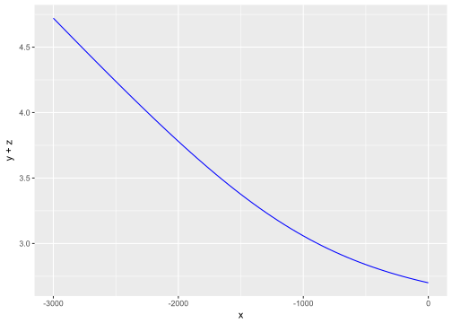
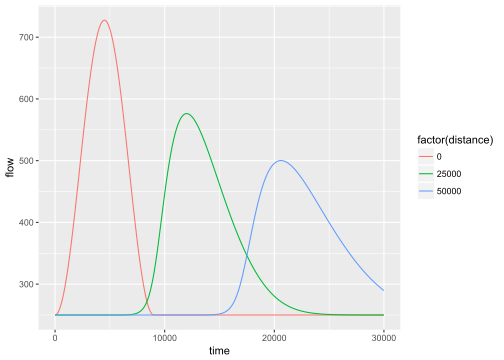
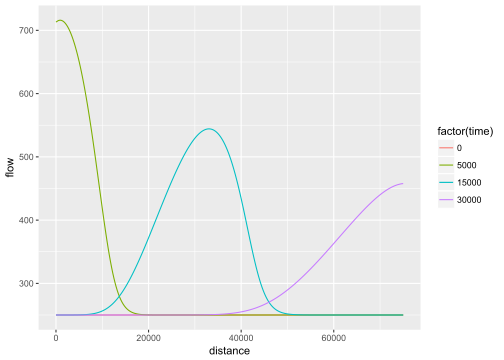

rivr provides functions for calculating the normal depth and critical depth, computing gradually-varied flow profiles, and solving the unsteady flow equations using finite-differencing methods. Outputs are formatted for manipulation with dplyr and visualization with ggplot2. This vignette provides a brief introduction to the main functions and example applications.
The rivr package defines a new class rivr, which is essentially an extension of the data.frame class with additional atributes. The following methods are defined for class rivr:
headtailprintsummaryplotThe normal depth \(y_n\) is defined as the flow depth at which \[
Q = \frac{C_m}{n} AR^{2/3}S_0^{1/2}
\] Where \(Q\) is the flow rate, \(n\) is Manning’s coefficient, \(A\) is the cross-sectional flow area (also a function of flow depth), \(R\) is the hydraulic radius and \(S_0\) is the bed slope. The critical depth \(y_c\) is defined as the flow depth at which \[
\frac{dE}{dy} = 1 - \frac{Q^2}{gA^3}\frac{dA}{dy} = 0.
\] Both \(y_n\) and \(y_c\) are non-linear functions of \(y\). rivr provides functions for computing normal and critical depths, as shown below. In both cases a Newton-Raphson scheme is used to solved the equations.
require(rivr)
flow = 250; mannings = 0.045 ; Cm = 1.486; gravity = 32.2
width = 100; slope = 0.001; sideslope = 0
yn = normal_depth(slope, mannings, flow, yopt = 2, Cm, width, sideslope)
yc = critical_depth(flow, yopt = 2, gravity, width, sideslope)
print(c(normal.depth = yn, critical.depth = yc))## normal.depth critical.depth
## 1.7113010 0.5789949The standard step method can be used to solve steady-state water surface profiles. The solution to gradually-varied flow profiles is based on the non-linear ordinary differential equation \[ \frac{dy}{dx} = \frac{S_0 - S_f}{1 - Fr^2} \] and is appropriate for cases where \(\frac{dy}{dx}\) is small. The standard-step method operates by stepping along the channel by a constant distance interval, starting from a cross-section where the flow depth is known (the control section). The flow depth is computed at the adjacent cross-section (target section). The computed value at the target is then used as the basis for computing flow depth at the next cross-section, i.e. the previous target section becomes the new control section for each step. A Newton-Raphson scheme is used each step to compute the flow depth and friction slope. Technically, the average friction slope of the control and target section is used to compute the flow depth at the target section.
flow = 250; mannings = 0.045 ; Cm = 1.486; gravity = 32.2
width = 100; slope = 0.001; sideslope = 0
gvf = compute_profile(slope, mannings, flow, y0 = 2.7, Cm, gravity, width,
sideslope, stepdist=50, totaldist=3000)While a plot method is defined for rivr objects, the output is also formatted for easy visualization with ggplot2.
require(ggplot2)
ggplot(gvf, aes(x = x, y = y + z)) + geom_line(color='blue')
# or try the default plot method
# plot(gvf)
Unsteady flow models solve the shallow water equations (conservation of mass and conservation of momentum). Kinematic wave models (KWM) use a truncated form of the momentum equation while dynamic wave models (DWM) solve the mass and momentum equations simultaneously. A variety of numerical schemes can be used to solve these equations. rivr provides an interface to multiple explicit finite differencing schemes (one KWM scheme and two DWM schemes) for computing unsteady flows. The MacCormack scheme is recommended for most applications.
baseflow = 250; mannings = 0.045 ; Cm = 1.486; gravity = 32.2
width = 100; slope = 0.001; sideslope = 0
numnodes = 301; xresolution = 250; tresolution = 10;
times = seq(0, 30000, by = tresolution)
wave = ifelse(times >= 9000, baseflow,
baseflow + (750/pi)*(1 - cos(pi*times/(60*75))))
downstream = rep(-1, length(wave))
mn = c(1, 101, 201)
mt = c(501, 1501, 3001)
uf = route_wave(slope, mannings, Cm, gravity, width, sideslope,
baseflow, wave, downstream, tresolution, xresolution, numnodes,
mn, mt, "Dynamic", "MacCormack", "QQ") Methods are defined for printing and summarizing rivr objects. Accessing the unsteady flow outputs for in-depth analysis is greatly simplified by using dplyr.
require(dplyr)
uf.nodes = filter(uf, monitor.type == "node")
ggplot(uf.nodes, aes(x=time, y=flow, color=factor(distance))) + geom_line()
uf.times = filter(uf, monitor.type == "timestep")
ggplot(uf.times, aes(x=distance, y=flow, color=factor(time))) + geom_line()
# or try the default plot method
# plot(uf)